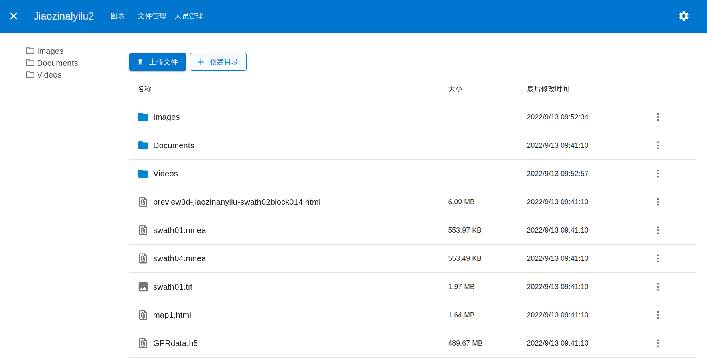

Webdav
Table of Contents
基于Web的分布式编写和版本控制（WebDAV）是超文本传输协议（HTTP）的扩展， 有利于用户间协同编辑和管理存储在万维网服务器文档。 WebDAV由互联网工程任务组的工作组在RFC 4918中定义。
WebDAV协议为用户在服务器上创建、更改和移动文档提供了一个框架。 WebDAV协议最重要的功能包括维护作者或修改日期的属性、名字空间管理、集合和覆盖保护。 维护属性包括创建、删除和查询文件信息等。 名字空间管理处理在服务器名称空间内复制和移动网页的能力。 集合（Collections）处理各种资源的创建、删除和列举。覆盖保护处理与锁定文件相关的方面。
许多现代操作系统为WebDAV提供了内置的客户端支持。
1. Webdav在软件系统中的应用
Webdav可以作为文档管理应用的底层技术支持, 比如存储各种文档, 图片. 也可以作为一个内嵌的云存储, 类似Dropbox, Nextcloud, 然后可增加权限, 分享, 特殊文件的预览等 
2. Webdav相较于FTP, SAMBA等的优势
Webdav提供HTTP协议的接口, 可以使用Python, Nodejs等语言创建目录, 上传文件等
同时Webdav也可以像Samba一样挂载在本地目录, 像本地磁盘一样使用
3. Webdav VS Amazone S3
s3的接口要比Webdav易用和现代化, 而且有大量的SDK来协助开发, Webdav的优势可能就是可以挂载到本地, 更易维护